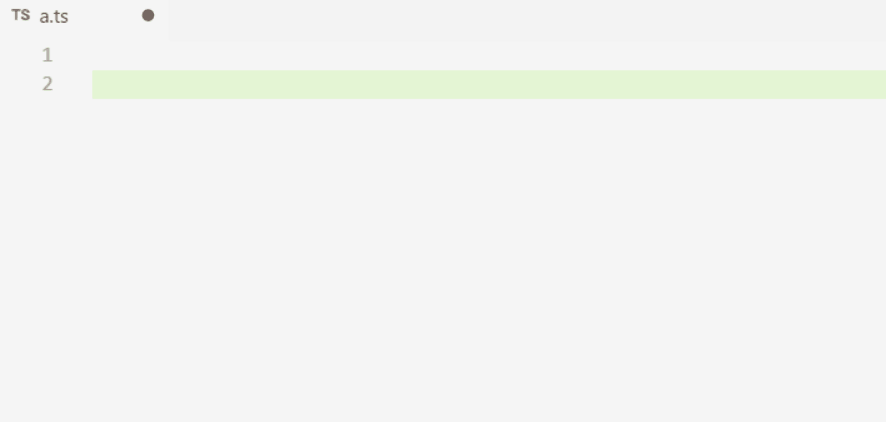

Typescript
The better JavaScript?
Christian Köberl / github.com/derkoe / @derkoeChristian Köberl
Software Architect / Developer
Develops webapps in Java/JS since 1999
Why TypeScript?
»How I Learned to Stop Worrying & Trust the Compiler«
Felix Rieseberg, TypeScript at Slack
Who can spot the bug?
function getFullName(personId) {
let person = personService.getPerson(personId);
return person.firstName + person.surname;
});
IDE Support
aka Intellisense JS Developer Support (IDE)
- Code completion aka Intellisense
→ has to be implemented for every library - Refactoring / Renaming
→ search & replace & pray
New Features
Introducting new featueres to ECMAScript
- Decorators (aka Annotations)
- async/await
- null/undefined safety
Typescript
ES6/7 (valid)
class Person {
constructor(firstName, lastName) {
this.firstName = firstName;
this.lastName = lastName;
}
}
let person = new Person(1, 2);
person.mama = 'Mia';
person = Math.sqrt(person);Types?
So why not classes and types?
Typescript vs ES6 vs ES5
export class Person {
firstName: string;
lastName: string;
dateOfBirth?: Date;
constructor(firstName: string, lastName: string) {
this.firstName = firstName;
this.lastName = lastName;
}
toString() {
return `${this.firstName} ${this.lastName} (${this.dateOfBirth})`;
}
}
Features
Typescript and ES6
Demo Time!
Basics
- Type checking
let hello: string = 'Hello'; hello = 5; // error - Intellisense

Classes
class Person {
constructor(private firstName: string, private lastName: string) {
}
getName(): string {
return `${this.firstName} ${this.lastName}`;
}
}
let person = new Person("Chris", "Köberl");
person.getName(); // Chris KöberlInheritance
class Employee extends Person {
employeeNo: number;
constructor(firstName: string, lastName: string,
employeeNo: number) {
super(firstName, lastName);
this.employeeNo = employeeNo;
}
getName() {
return super.getName() + '(' + this.employeeNo + ')';
}
}Interfaces
interface Person {
firstName: string;
lastName: string;
dateOfBirth?: Date;
}
class Employee implements Person {
constructor(public firstName: string, public lastName: string) {
}
}Type Compatibility
Structural Typing aka Duck Typing
let person: Person = {
firstName: 'Chris',
lastName: 'Kö'
};
person.dateOfBirth = new Date();
function savePerson(p: Person) {
// ...
}Type Inference
let name = 'Christian'; // no type needed
// even no types for complex stuff
document
.getElementById('id')
.addEventListener('click',
ev => alert(`${ev.clientX}, ${ev.clientY}`));
Generic Types
class Stack<T> {
private items: T[] = [];
public push(item: T) {
this.items.push(item);
}
public pop(): T {
return this.items.pop();
}
}
let stack = new Stack<string>();
stack.push("a");
let a = stack.pop();
Integrating JavaScript
- TypeScript Declaration Files -
d.ts
For:$('#id').toggleClass('class');interface JQuery { toggleClass(className: string): JQuery; } interface JQueryStatic { (selector: string): JQuery; } declare var $: JQueryStatic; - DefinitelyTyped
Modules and Namespaces
- Modules correspond to ES6 modules
exportandimport - Namespaces are translated to IIFEs module pattern
Advanced Topics
Decorators
class MyClass {
@measure()
doSomething() {
// ...
}
}- Access control
- Logging, Profiling
- Frameworks (e.g. Angular)
Creating Decorators
function measure() {
return function (target: any, propertyKey: string,
descriptor: PropertyDescriptor) {
let originalFunction = descriptor.value;
descriptor.value = function (...args: any[]) {
let start = Date.now();
originalFunction.apply(target, args);
console.log(`${propertyKey} with params "${args}"
took ${Date.now() - start}ms`);
}
}
}
async/await
PromisesdoSomething() {
return getToken().then(token => {
return loadData(token);
}).then(data => {
this.data = data;
});
}async/await
Easier promise handlingasync doSomething() {
let token = await getToken();
this.data = await loadData(token);
}only with target = ES6
target = ES5 on roadmap for Typescript 2.1
target = ES5 on roadmap for Typescript 2.1
Tools
Typescript Compiler
Install: npm i (-g|-D) typescript
Init/config: tsc --init» tsconfig.json
Run: tsc
It compiles!!
tsconfig.json
{
"compileOnSave": false,
"compilerOptions": {
"module": "commonjs",
"target": "es5",
"noImplicitAny": true,
"outDir": "dist",
"types": [ "node", "jasmine" ]
},
"include": [ "src/**/*" ]
}Typings
Search and find d.ts filesInstall: npm install typings --global
Search: typings search jasmine
Install: typings install @types/jasmine --save
Install from Definitely Typed: typings install dt~angular --global --save
tslint
Install: npm i (-g|-D) tslint
Init/config: tslint --init» tslint.json
Run: tslint -c tslint.json 'src/**/*.ts'
Editors / IDEs
Visual Studio Code
Others good support
- WebStorm / IntelliJ IDEA
- Atom
- Sublime
- Microsoft Visual Studio
News
Typescript 2.0 (09/2016)
- Typings now with npm: @types/*
- Null- and undefined-aware types
- Control flow analyzed types
readonlyattributes
Typescript 2.x
- async/await for ES5/ES3
- Typescript extensibility
- Quick-fix support in service API for IDEs
- Ambient decorators (
@@deprecated)
Summary
When ...- you love JS
- keep JS
- you like JS and miss IDE/compiler support
- use Typescript
- you don't like JS
- use something else (CoffeeScript, Dart, ...)
Thx! Questions?
Image Credits
- Schneespur: © Christian Köberl
- Robin Hood: Imgur
- I'll take both: Imgur
- It compiles: Imgur
- All others © Porsche Informatik